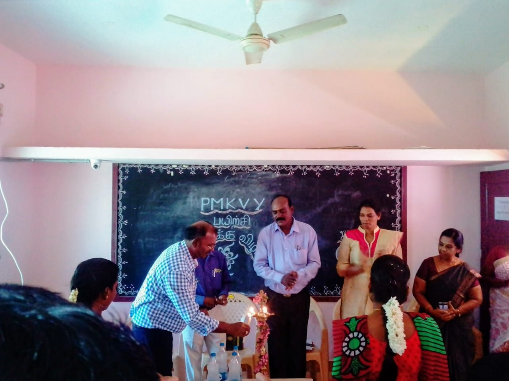
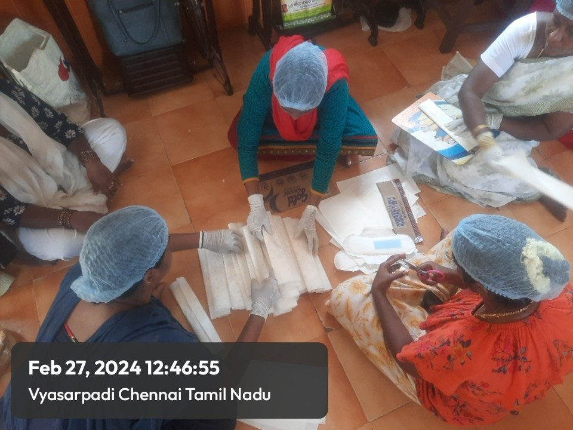
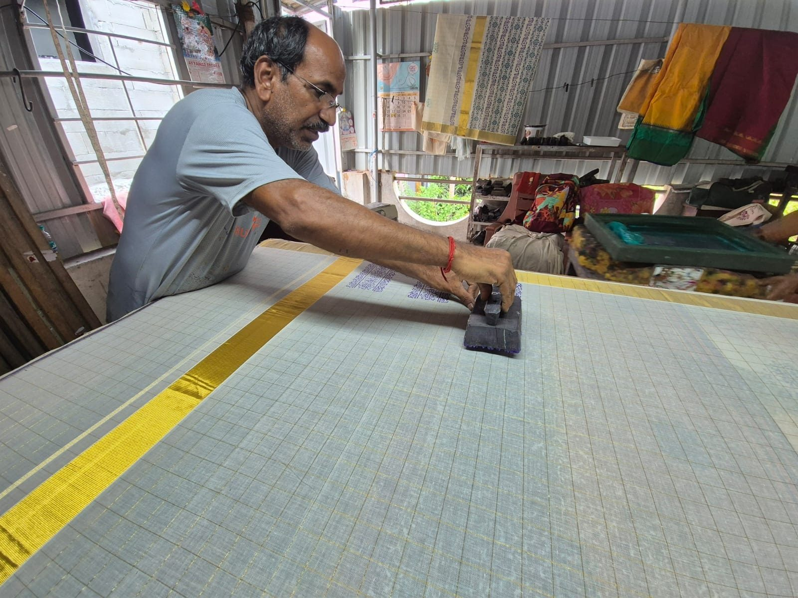
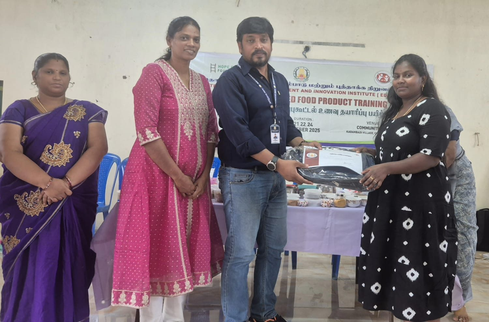

Agriculture
Land Holding Pattern & Horticulture Prospects
Tribal livelihood and horticulture development assessment in Javvadhu Hills.
Read more about Javvadhu Hills horticultureHope Ever Foundation works across livelihoods, agriculture, women empowerment, child rights, healthcare, and youth skill development initiatives.
Tribal livelihood and horticulture development assessment in Javvadhu Hills.
Read more about Javvadhu Hills horticulture
Integrated farmer training focusing on sustainable agriculture, organic farming practices, water conservation, and livestock productivity.
Read more about sustainable agriculture
Employability and entrepreneurship programs for youth, artisans, and women.
Read more about NSDC skill development
Awareness and protection initiative promoting child rights in rural communities.
Read more about child rights awareness
Vocational and entrepreneurship programs for marginalized women.
Read more about women's skill development
Stable home-based livelihood opportunities for widowed and poor women.
Read more about value added products
Community-based training promoting millet cultivation, nutrition, and processing among rural groups.
Read more about millet training
Grassroots adoption of solar energy solutions, solar lantern distribution, and clean energy education.
Read more about solar awareness
Integrated health outreach covering public health awareness, WASH campaigns, and welfare distribution.
Read more about community health outreach